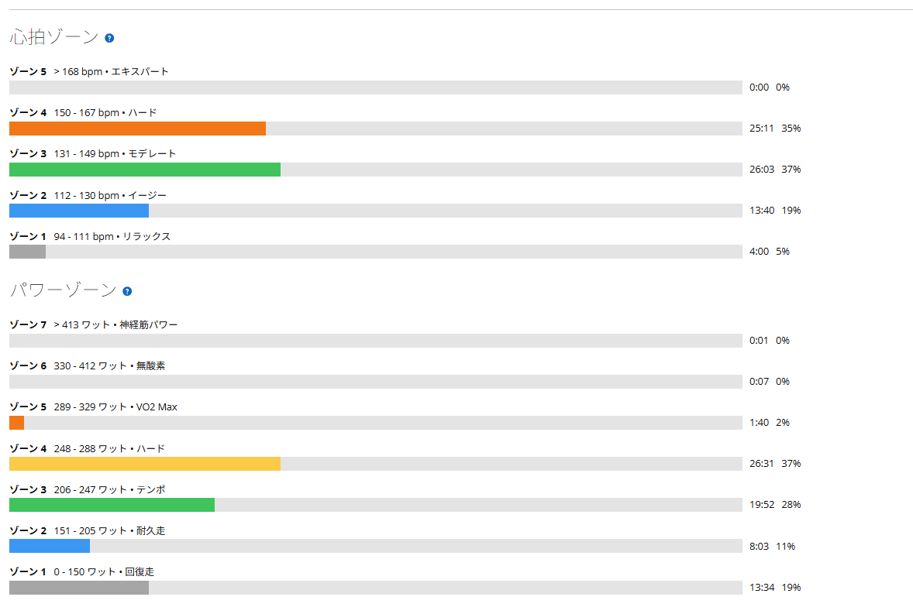
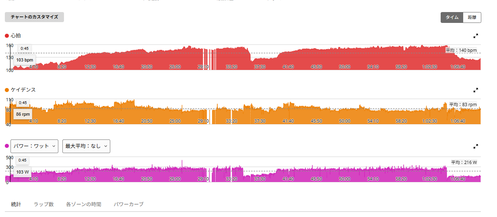

前日TSS161の翌日にSST25分×2。Ares 2の違和感もようやく消えた
前日は太平から琴平、唐沢までつないでTSS161.1。太平323W、琴平291W、唐沢293Wと、それなりに踏んだ翌日である。その翌日に4本ローラーでSST25分×2を組んだのは、自分でも並びとしてどうかと思う。
ただ今日は最初から逃げ道を用意していた。1本目を踏んでみて脚が重ければ、2本目はテンポへ落とす。そう決めて乗り始めた。結果としてその逃げ道は使わずに済み、おまけにずっと調整を続けていたS-Works Ares 2で痛みも違和感も出なかった。正直、数字よりこちらの方がうれしい。

ダメならテンポへ落とすつもりで始めた
今日のメニューはアップ10分、SST25分、レスト約5分、SST25分、ダウン5分。文字にすると淡々としているが、前日の疲労がある状態で25分を2本そろえるのは、正直やってみないと分からない。だから最初から「1本目で脚が終わっていたら2本目はテンポ」と決めておいた。
逃げ道を先に用意しておくのは弱気に見えるかもしれない。ただ、やる前から完遂を義務にすると、途中で崩れた時に全部が失敗になってしまう。今日は出力更新を狙う日ではなく、前日の高負荷を受けた状態でどこまで揃うかを見る日だった。
38.87km・NP233W・TSS82.2
- 全体38.87km / 1時間10分02秒
- 負荷平均216W / NP233W / IF0.846 / TSS82.2 / 最大20分249W
- 心拍・回転平均140bpm / 最大159bpm / 平均83rpm
- 環境平均28.7℃ / 最高30.0℃ / 推定発汗579ml
- 効果有酸素TE3.4 / 無酸素TE0.0
TSS82.2。前日の161.1に比べれば軽いが、翌日に積む数字としては十分に効く。無酸素TEが0.0なのは狙い通りで、今日は上を叩く日ではなく持続を確認する日だった。

1本目は接続不良で数値が沈んだ
1本目は25分02秒、表示上は平均251W、NP246W。ただし20分あたりからパワーメーターと心拍計の接続が不安定になった。グラフを見ると29分前後で心拍もパワーも断続的に落ちている。
脚を止めたわけでも、出力が大きく崩れたわけでもない。センサーの信号が途切れたせいで、ラップ平均とNPが実際より低く出ている可能性が高い。接続が安定していた区間ではおおむね250W前後を維持できていたので、1本目は実質250W前後で25分を踏み切ったと考えてよさそうだ。機材トラブルの言い訳は好きではないが、これは言い訳ではなく単に線が切れている。

2本目は247W。テンポへ逃げずに済んだ
2本目は25分01秒、平均247W、NP247W、平均心拍151bpm、最大159bpm。前日のTSS161.1を考えれば2本目で大きく落ちても不思議はなかったが、247Wを25分維持できた。
NPと平均がほぼ同じというのは、25分を通して出力の凸凹が小さかったということでもある。今日は最初に用意した逃げ道を使わずに済んだ。数字を更新した日ではないが、前日の疲労がある中で2本を揃えられたことには意味がある。
Ares 2で、ついに何も出なかった
今日の一番の収穫はSSTの完遂ではない。S-Works Ares 2で痛みも圧迫感も違和感も出なかったことだ。
買った直後は左足外側の圧迫感や、足首と膝まわりの違和感が気になっていた。初代Aresでは何も起きないのに、Ares 2では何かが合わない。同じサイズでも履き心地や足の固定のされ方は同じではないらしい。そこでクリート位置を少しずつ動かしてきた。一度に大きく動かさず、角度と左右位置を細かく確認してローラーで試し、違和感があればまた少し動かす。地味というより、ほとんど根気の作業である。
その結果が今日だった。70分のローラーで、しかもSST25分を2本、合計50分の負荷をかけて何も出なかった。軽く回しただけなら見逃していたかもしれないが、この負荷で無症状なら、少なくともローラー上では現在のクリート位置がかなり合ってきたと考えてよさそうだ。
次は外。ただしクリートはもう動かさない
ローラーで問題がなかったからといって、外でも大丈夫とは限らない。外にはダンシング、路面からの振動、コーナー、ブレーキング、横方向の荷重、勾配の変化、そして長時間履いた後半が加わる。足にかかる方向も時間も、室内とはまるで違う。
なので次は外で使って、強く踏んだ時やダンシングした時に違和感が出ないかを見たい。ただし今日問題が出なかったこの位置は、もうむやみに動かさない。写真と印で残して基準にする。ここまで長かったので、ようやく基準点ができた気がする。
ローラーは外より低い出力でもきつい
完遂できたとはいえ、ローラーは外より低い出力でもはっきりきつい。前日は外で太平323W、琴平291W、唐沢293Wを踏んでいる。今日は250W前後のSSTだ。数字だけ見れば外の登りよりずっと低いのに、体感としてはローラーの方が脚にも精神にも重い。
これは室内が苦手というだけの話ではないと思う。外では一定に踏んでいるつもりでも、下り、コーナー、信号、路面の変化、ギアチェンジ、短い惰性と、細かい休みが常に挟まっている。登りでさえ勾配が変われば瞬間的にトルクが抜ける。対してローラーのSSTは25分間ほとんど休みがない。平均パワーが低くても同じ筋肉に負荷がかかり続ける。
姿勢の自由度も違う。外ではサドルの上で前後に少し移動し、ハンドルの持ち方を変え、勾配に合わせて上体を起こし、一瞬ダンシングを入れ、バイクを左右に振る。そうやって使う筋肉を無意識に切り替えている。4本ローラーではバランスを保つ都合でほぼ同じ姿勢が続き、特定の場所に負荷が集中したまま体幹も緊張し続ける。低い出力で苦しいのは、たぶんこのあたりが理由だ。
「腰で乗る」はローラーで再現できなかった
前日の外ライドで、低ケイデンスで踏む時に「腰で乗る」ような感覚が少しだけ分かった。正確には腰そのもので踏むわけではなく、骨盤をサドルの上で安定させ、股関節から脚へ力を伝え、お尻とハムストリングを使い、体重をペダルへ乗せ、上体を無駄に揺らさない。そういう動きの寄せ集めに近い。
ところが今日はその感覚をローラーで再現できなかった。4本ローラーは水平で車体を大きく振ることもできず、強く体重を乗せるとかえって不安定になる。外の登りなら勾配に対して身体を支えながらペダルへ体重を預けられるが、その前提が室内にはない。だから再現できなかったからといって、昨日の感覚が間違っていたとは思わない。単に条件が違う。
外とローラーで、やることを分ける
そう考えると、同じフォームを両方で再現しようとするのはあまり筋が良くない。外では骨盤の安定、体重の使い方、低ケイデンスと高トルク、勾配に応じたフォーム、ダンシングを確認する。ローラーでは一定出力、滑らかな回転、フォームを崩さず踏み続けること、左右差を抑えること、そして持続時間を伸ばすことを見る。
外でつかんだ感覚をローラーへ丸ごと持ち込む必要はない。ローラーでは骨盤を安定させ、腹圧を軽く保ち、股関節から回す意識があれば十分だと思う。どちらかに寄せるのではなく、それぞれの得意なことをやらせた方がよさそうだ。
今日やってみて思ったこと
前日の高負荷を受けた状態でも、SST25分×2を最後まで踏めた。1本目は接続不良で数値が乱れたが脚が止まったわけではないし、2本目も247Wで25分。テンポへ落とさずに終えられたのは素直に良かった。
そして調整を続けてきたAres 2で、ついに何も出なかった。地味なクリート調整を繰り返してきただけに、たぶん今日の記録の中ではここが一番大きい。一方で外でつかんだ低ケイデンスの感覚は室内で再現できず、外より低い出力なのにローラーの方がきつかった。同じ自転車の練習でも、得意なことはそれぞれ違うということだと思う。
自分用メモ
- クリート今日の位置を写真と印で記録。外で確認するまで動かさない
- Ares 2次は外でダンシング・振動・横荷重・長時間を確認する
- ローラー一定出力と骨盤の安定を優先。外のフォームは持ち込まない
- 外の登り低ケイデンスで「腰で乗る」感覚を次も再現できるか見る
- 機材パワーメーターと心拍計の接続が途切れた。次回前に確認しておく